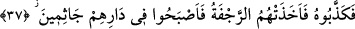

taşlar savuran rüzgârlar gönderdik, kimini korkunç bir ses yakaladı, kimini yerin
dibine geçirdik, kimini de suda boğduk. Allah onlara zulmetmiyor, asıl onlar
kendilerine zulmediyorlardı.
41. Allah’tan başka dostlar edinenlerin durumu, örümceğin durumu gibidir.
Örümcek bir yuva edinir; halbuki yuvaların en çürüğü şüphesiz örümcek yuvasıdır.
Keşke bilselerdi!
42. Allah, onlar’ın kendisini bırakıp da hangi şeye yalvardıklarını şüphesiz bilir. O,
mutlak güç ve hikmet sâhibidir.
43. İşte biz, bu temsilleri insanlar için getiriyoruz; fakat onları ancak bilenler
düşünüp anlayabilir.
44. Allah, gökleri ve yeri hak olarak (yerli yerince) yarattı. Şüphesiz bunda, îman
edenler için (Allah’ın varlık ve kudretine) bir nişâne bulunmaktadır.
“Medyen’e de kardeşleri Şuayb’ı gönderdik”
Şuayb (a.s), bu kavmin soyundan geldiği için âyet-i kerîme’de ona “onların
kardeşleri” diye hitab edilmiştir. Bu konu daha önce bir kaç defa geçmişti.
“ve Şuayb” kavmini Allah’a dâvet ederek: “Ey kavmim!” Tek olan “Allah’a kulluk
edin,” son güne, “âhiret gününe umut bağlayın, yeryüzünde” yâni Medyen’de
bozgunculuk çıkarmayın; ölçü ve tartıda noksanlık yaparak, fesad çıkarıp “bozgunculuk
yaparak karışıklık çıkarmayın!” Haddi aşmayın! “dedi.”
Bu “son gün” ile kasdedilen; kıyamet günüdür. Çünkü o, günlerin sonudur. Yani, siz o
günü ve o günde vukû bulacak ahvâli gözleyin; âkıbetinizde size yarayacak ve size
faydası olacak, sizi Allah’ın azâbından koruyacak ve emin kılacak sâlih ameller işleyin,
demektir. Yahud da: “son gün”; ölüm günüdür. Çünkü ölüm günü, onların dünya
hayatının son günüdür.
Âyette “müfsidîn” diye kayıtlanması, her ne kadar “haddi aşma” fesad konusunda olsa
da, bazen fesadla ilgili olmayan hususlarda da olabilir. Meselâ, haddi aşan zâlime fiili
ile karşılık vermek gibi. Ve yine daha iyisi tercih edilen bir durum ihtivâ edebilir. Hızır
(a.s.)’ın çocuğu öldürmesi ve gemiyi delmesi gibi.
37. Fakat onu yalancılıkla itham ettiler. Derken, kendilerini bir sarsıntı
yakalayıverdi ve yurtlarında diz üstü çöke kaldılar.
“Fakat” kavmi “onu yalancılıkla ithâm ettiler. Fesad ve bozgunculuğa son
vermediler. Derken, kendilerini” şiddetli “bir sarsıntı yakalayıverdi ve yurtlarında